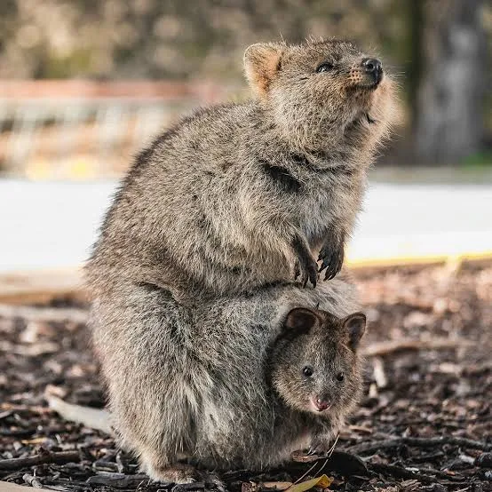
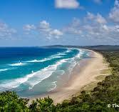

The Quokka is a marsupial native to Australia. It is well known for its friendly appearence and often looks like it's smiling. QUokkas usually live on islands and coastal areas, and they are most active at night.

Quokkas are mainly found on Rottnest Island and some other nearby islands in Western Australia. They live in bushlands, graslands, and coastal areas, where there is pleanty of food and shelter.